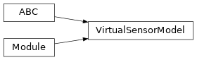

torchfilter.base._virtual_sensor_model
Private module; avoid importing from directly.
Module Contents
Classes
Virtual sensor base class for our differentiable Kalman filters. |
- class torchfilter.base._virtual_sensor_model.VirtualSensorModel(state_dim: int)[source]
Bases:
abc.ABC,torch.nn.ModuleVirtual sensor base class for our differentiable Kalman filters.
Maps each observation input to a predicted state and uncertainty, in the style of BackpropKF. This is often necessary for complex observation spaces like images or point clouds, where it’s not possible to learn a standard state->observation measurement model.
- state_dim
Dimensionality of our state.
- Type:
int
- abstract forward(self, *, observations: types.ObservationsTorch) Tuple[types.StatesTorch, types.ScaleTrilTorch][source]
Predicts states and uncertainties from observation inputs.
Uncertainties should be lower-triangular Cholesky decompositions of covariance matrices.
- Parameters:
observations (dict or torch.Tensor) – Measurement inputs. Should be either a dict of tensors or tensor of size
(N, ...).- Returns:
Tuple[torch.Tensor, torch.Tensor] – Predicted states & uncertainties. States should have shape
(N, state_dim), and uncertainties should be lower triangular with shape(N, state_dim, state_dim).